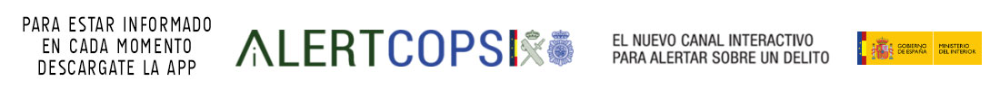
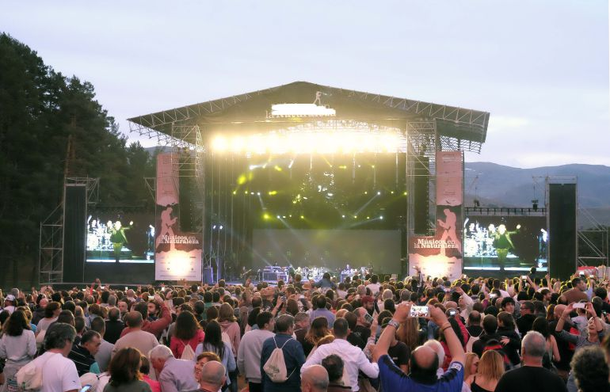
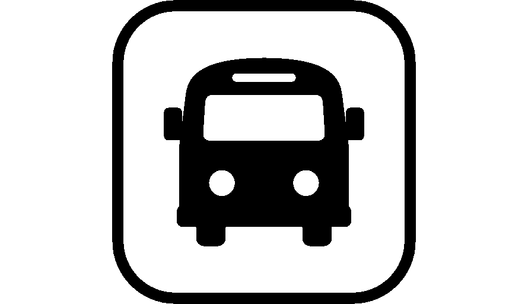

ACAMPADA OFICIAL FESTIVAL HELMANTIKA SALAMANCA 2021
- Esta zona se situa en un magnifico emplazamiento en la sierra de la Alberca a 1h de Salamanca. Esta zona de acampada contará con todos los servicios necesarios para vuestra estancia, duchas, aseos, hostelería, consignas, recarga móviles, control de accesos 24hs., vigilancia 24hs., asistencia sanitaria 24hs., servicio de limpieza continuo, recogida de residuos, etc. Dispones igualmente de un aparcamiento anexo a la zona de acampada para todos los usuarios de la misma. AFORO LIMITADO.
- La acampada se encuentra a 500m andando desde el punto de acampada, la zona de acampada ha sido perfectamente acomodada a las circunstancias del festival
RECOMENDACIONES
- Recuerda que el mes de agosto es muy caluroso. Por eso, no olvides mantenerte bien hidratado bebiendo agua a menudo y protegerte del sol con protección solar.
- Respeta el descanso del resto de los usuarios de la zona de acampada.
- La zona de acampada cuenta con servicio médicos. Si necesitas ayuda por cualquier problema o requieres custodia de medicamentos (frío, etc.) no dudes en contactar con ellos.
- Recuerda hacer uso de los contenedores de basura, distribuidos por toda la zona de acampada, para mantener limpias la zona y hacer más cómoda la estancia a todos los usuarios. Además, en la zona de acampada hay contenedores de basura selectiva para colaborar con el reciclaje.
CONDICIONES DE SEGURIDAD
Alerta de Seguridad
Para cualquier incidente delictivo ponemos a vuestra disposición el telefono 923999999, 091 o 112
Además con la nueva app de AlertCops para informar para alertar sobre cualquier delito facilitaremos el canal de interacción
Pulse sobre la imagen para Descargar
NORMATIVA
Seguridad para nuestros usuarios es lo más importante de cara a que todos puedan disfrutar del mismo en condiciones altamente seguras, de ahí que os informamos de cómo proceder y responder con nuestro equipo de Seguridad del festival.
• Debido a las actuales medidas de seguridad hay que tener presente que habrá más cacheos en todas las zonas, así que os rogamos que tengáis paciencia si las colas son más largas de lo normal.
• Se permite la entrada al recinto con bolsas de pequeño tamaño (dimensiones máximas: ancho 21cm; alto 30cm; fondo 8cm; tamaño A4). • Las bolsas serán registradas en la entrada del recinto así que para evitar largas colas os recomendamos encarecidamente que no traigáis bolsas.
• No se permite la entrada al festival con bolsas de gran tamaño. No hay consigna o guardarropa.
• Las bolsas no pueden dejarse en las entradas o en áreas circundantes. Cualquier objeto que se deje será retirado.
• También habrá registros en la entrada del festival que pueden incluir un cacheo completo y/o el uso de detectores de metales. Cualquier objeto, que pueda ser considerado como uso de arma, o que pueda causar daño o perturbar a cualquier otra persona en el evento, será confiscado.
• Os agradecemos vuestra cooperación y paciencia cuando entréis al festival. Cuanto más fácil nos pongáis el trabajo (llevando bolsos abiertos) más ágil será el proceso.
• También notaréis una mayor presencia policial en el festival. No os alarméis ni os sintáis amenazados: están aquí para ayudar y protegernos a todos.
• Os rogamos que cuidéis los unos de los otros y que comuniquéis cualquier situación sospechosa a los miembros de Seguridad del festival y a la Policía o al miembro de nuestro equipo que tengáis más cercano.
• Cualquier objeto que pueda ser considerado como peligroso será confiscado.
• Por motivos de seguridad no estará permitido acceder al recinto de conciertos con cascos de moto, maletas, bolsas o mochilas de grandes dimensiones.
• Sé activo frente a una agresión sexista. Si la ves o tienes conocimiento, no la permitas. Recházalas y denuncia a la organización o cuerpos de seguridad. NO es NO, por un Dreambeach libre de violencia sexual.
• Utilice las costas y playas de forma cívica, En estos espacios públicos está prohibido arrojar basura, restos de comidas, latas, botellas u otros desperdicios , así como encender hogueras.
• Ante cualquier comportamiento extraño de alguna persona dirígete al personal de la organización, vigilantes de seguridad o personal policial más próximo para poner en conocimiento los hechos o sospechas percibidas.
• Los puntos de información los podrás encontrar para ayuda ante cualquier duda o situación que te surja durante tu estancia en el Festival en cualquiera de nuestras taquillas
COMO LLEGAR

La zona se habilito con un escenario y una increible puesta de escena para poder disfrutar del festival mezclandose con el entorno de Nava de Francia.
Aquí podemos ver una foto de la prueba que se realizo con personas de la zona.
BUSES
CIUDADES DESDE DONDE SALDRÁN LOS AUTOBUSES
Salamanca | Valladolid | Madrid | Malaga | Santiago de Compostela
Proximamente se anunciaran los horarios de buses